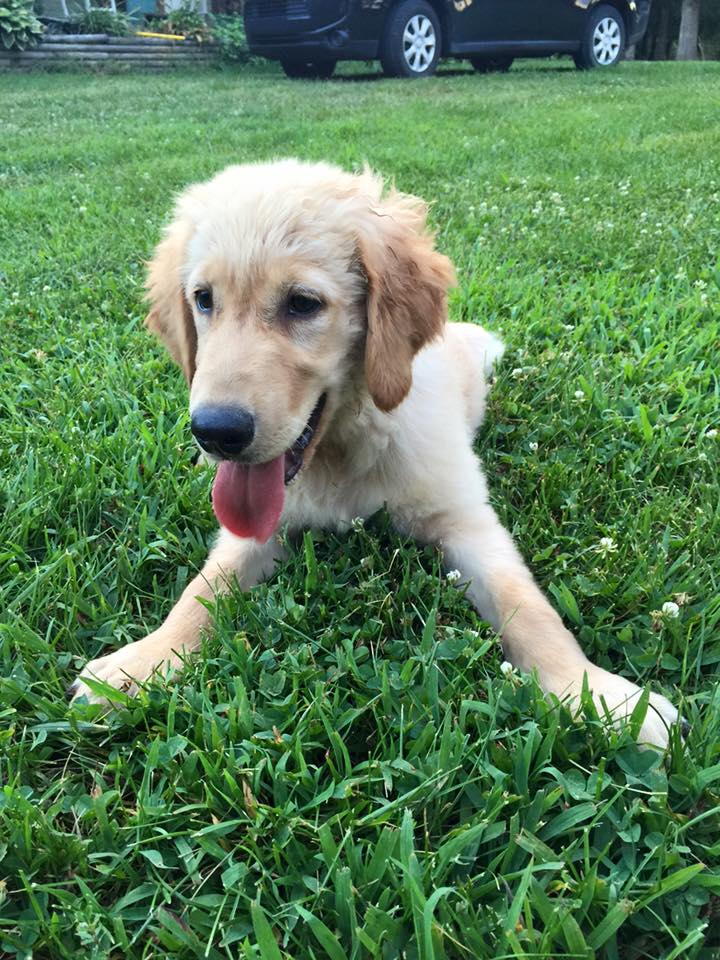
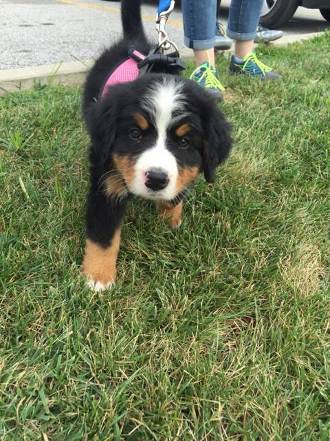

<body>
<center><div class="container-fluid"><div ng-show="breeds">
  <h1>Want to learn more about our breeds?</h1>
    <button class='btn btn-primary' ng-click="getGoldenView()">Golden Retrievers</button>
    <button class='btn btn-primary' ng-click='getGoldenDoodleView()'>Goldendoodles</button>
    <button class='btn btn-primary' ng-click='getBerneseView()'>Bernese Mountain Dogs</button>
</div></center>
<hr>
<div ng-show="goldenView">

<p style="text-align: center">
  The Golden Retriever is a large-sized breed of dog bred as gun dogs to retrieve shot waterfowl such as ducks and upland game birds during hunting and shooting parties, and were named 'retriever' because of their ability to retrieve shot game undamaged. Golden Retrievers have an instinctive love of water, and are easy to train to basic or advanced obedience standards. They are a long-coated breed, with a dense inner coat that provides them with adequate warmth in the outdoors, and an outer coat that lies flat against their bodies and repels water. Golden Retrievers are well suited to residency in suburban or country environments. Although they need substantial outdoor exercise, they should be housed in a fenced area because of their instinctual tendency to roam. They shed copiously, particularly at the change of seasons, and require fairly regular grooming.
</p>
</div>

<div ng-show="goldendoodleView">

<p>

</p>
</div>
<div ng-show="berneseView">

<p>
</p>
</div>
</div>
</body>
